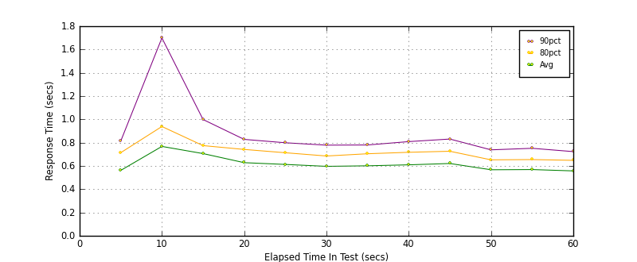
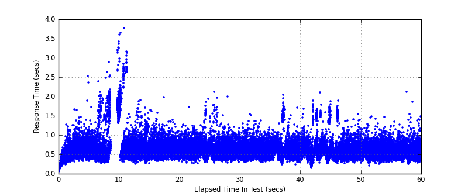
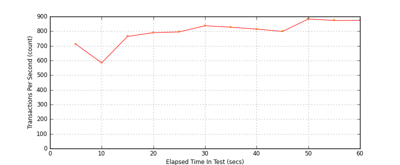

Performance Results Report
Summary
transactions: 48267
errors: 0
run time: 60 secs
rampup: 0 secs
test start: 2017-05-24 19:05:54
test finish: 2017-05-24 19:06:54
time-series interval: 5 secs
workload configuration:
| group name | threads | script name |
|---|
| user_group-21 | 20 | redis_stress.py |
| user_group-20 | 20 | redis_stress.py |
| user_group-23 | 20 | redis_stress.py |
| user_group-22 | 20 | redis_stress.py |
| user_group-25 | 20 | redis_stress.py |
| user_group-24 | 20 | redis_stress.py |
| user_group-2 | 20 | redis_stress.py |
| user_group-3 | 20 | redis_stress.py |
| user_group-1 | 20 | redis_stress.py |
| user_group-6 | 20 | redis_stress.py |
| user_group-7 | 20 | redis_stress.py |
| user_group-4 | 20 | redis_stress.py |
| user_group-5 | 20 | redis_stress.py |
| user_group-8 | 20 | redis_stress.py |
| user_group-9 | 20 | redis_stress.py |
| user_group-10 | 20 | redis_stress.py |
| user_group-11 | 20 | redis_stress.py |
| user_group-12 | 20 | redis_stress.py |
| user_group-13 | 20 | redis_stress.py |
| user_group-14 | 20 | redis_stress.py |
| user_group-15 | 20 | redis_stress.py |
| user_group-16 | 20 | redis_stress.py |
| user_group-17 | 20 | redis_stress.py |
| user_group-18 | 20 | redis_stress.py |
| user_group-19 | 20 | redis_stress.py |
All Transactions
Transaction Response Summary (secs)
| count | min | avg | 80pct | 90pct | 95pct | max | stdev |
|---|
| 48267 | 0.046 | 0.612 | 0.709 | 0.811 | 0.946 | 3.768 | 0.237 |
Interval Details (secs)
| interval | count | rate | min | avg | 80pct | 90pct | 95pct | max | stdev |
|---|
| 1 | 3555 | 711.00 | 0.049 | 0.562 | 0.714 | 0.814 | 0.912 | 2.515 | 0.209 |
| 2 | 2920 | 584.00 | 0.271 | 0.768 | 0.939 | 1.699 | 1.853 | 3.419 | 0.483 |
| 3 | 3822 | 764.40 | 0.253 | 0.706 | 0.775 | 0.999 | 1.635 | 3.768 | 0.394 |
| 4 | 3950 | 790.00 | 0.267 | 0.628 | 0.742 | 0.828 | 0.906 | 1.976 | 0.159 |
| 5 | 3979 | 795.80 | 0.263 | 0.613 | 0.713 | 0.799 | 0.889 | 1.937 | 0.159 |
| 6 | 4185 | 837.00 | 0.284 | 0.597 | 0.685 | 0.779 | 0.876 | 2.107 | 0.163 |
| 7 | 4136 | 827.20 | 0.290 | 0.601 | 0.705 | 0.780 | 0.865 | 1.539 | 0.146 |
| 8 | 4071 | 814.20 | 0.238 | 0.610 | 0.717 | 0.809 | 0.918 | 2.034 | 0.200 |
| 9 | 3990 | 798.00 | 0.143 | 0.621 | 0.726 | 0.831 | 1.033 | 2.097 | 0.240 |
| 10 | 4416 | 883.20 | 0.262 | 0.567 | 0.652 | 0.738 | 0.835 | 1.887 | 0.182 |
| 11 | 4366 | 873.20 | 0.212 | 0.569 | 0.655 | 0.752 | 0.834 | 1.476 | 0.141 |
| 12 | 4374 | 874.80 | 0.248 | 0.557 | 0.648 | 0.723 | 0.802 | 2.108 | 0.141 |
Graphs
Response Time: 5 sec time-series

Response Time: raw data (all points)

Throughput: 5 sec time-series
